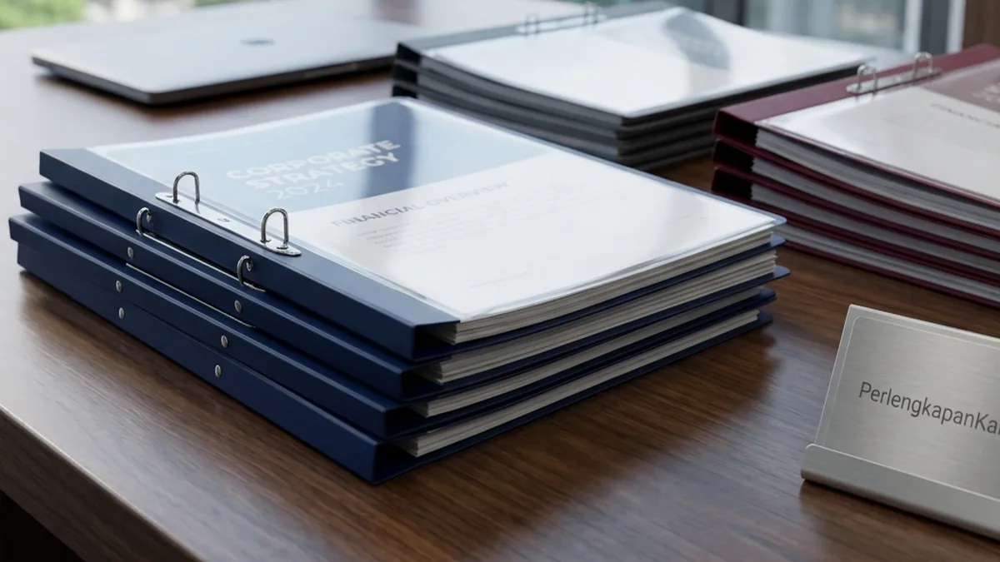

Mengapa Perusahaan Membutuhkan Layanan Jual Map Snelhechter Grosir Berkualitas?
Layanan jual map snelhechter grosir dibutuhkan perusahaan untuk menjamin ketersediaan sarana kearsipan proposal resmi, menyamaratakan standarisasi presentasi dokumen kantor, serta memangkas biaya belanja ATK rutin. Berdasarkan data Indonesia Office Administration & Procurement Survey 2025-2026, sebanyak 76,4% divisi General Affairs dan procurement perusahaan di wilayah Jabodetabek mengalami penghematan anggaran belanja ATK hingga 34,2% setelah beralih dari pembelian eceran berkala di toko buku ritel ke skema pemesanan grosir terencana. Laporan tersebut juga menggarisbawahi bahwa 88,1% manajer pengadaan memilih map berbahan dasar plastik mika karena tingkat keawetannya 5 kali lebih tahan lama dibandingkan map kertas buffalo yang rentan rapuh di ruangan ber-AC.
Kerapian dokumen penawaran tender dan berkas laporan kerja merupakan cerminan langsung dari kredibilitas manajerial suatu organisasi bisnis. Ketika sebuah perusahaan mengikuti lelang tender proyek skala nasional atau mengirimkan proposal kerja sama bernilai miliaran rupiah, detail presentasi fisik menjadi salah satu parameter penilaian pertama oleh pihak evaluator. Map snelhechter berbahan plastik memastikan lembaran dokumen tetap licin, rapi, dan terikat kokoh dari halaman pembuka hingga lampiran akhir.
Ketiadaan stok map snelhechter di kantor sering kali memicu situasi genting ketika staf administrasi harus mencetak dokumen mendadak sebelum rapat direksi atau kunjungan klien penting. Berbelanja mendadak secara eceran ke toko terdekat tidak hanya memakan waktu staf, namun juga menghasilkan harga satuan yang jauh lebih mahal tanpa kelengkapan faktur pajak yang sah. Bermitra dengan distributor resmi Perlengkapan Kantor memberikan kepastian ketersediaan inventaris kearsipan yang selalu siap pakai setiap saat.
Apa Perbedaan Map Snelhechter Plastik PP Dibandingkan Map Kertas Konvensional?
Map snelhechter plastik PP menawarkan keunggulan mutlak berupa ketahanan terhadap cairan, struktur anti-sobek, visibilitas sampul transparan, serta usia pakai yang jauh lebih lama dibandingkan map kertas konvensional. Secara teknis, map snelhechter kertas berbahan manila atau buffalo kerap mengalami deformasi bentuk seperti sudut yang tertekuk, warna yang memudar, serta kerentanan terhadap kelembapan udara atau percikan kopi di meja kerja. Sebaliknya, map snelhechter plastik modern diproduksi menggunakan bahan lembaran Polypropylene (PP) ramah lingkungan yang lentur namun memiliki daya tahan mekanis yang sangat kuat terhadap gesekan dan tarikan.
Berikut adalah tabel komparasi spesifikasi teknis antara map snelhechter plastik PP dari distributor Perlengkapan Kantor dibandingkan map kertas konvensional:
| Parameter Komparasi | Map Snelhechter Plastik PP (Perlengkapan Kantor) | Map Snelhechter Kertas (Buffalo / Manila) |
|---|---|---|
| Material Dasar | Lembaran Polypropylene Elastis & Mika Transparan | Kertas Karton Daur Ulang Padat |
| Ketahanan Terhadap Cairan | 100% Waterproof (Tahan Air & Minyak) | Rentan Hancur & Noda Permanen Saat Basah |
| Visibilitas Halaman Judul | Sampul Bening (Judul Terbaca Jelas Tanpa Buka) | Sampul Buram (Wajib Menulis Label Manual) |
| Daya Tahan Lipatan Sudut | Bebas Kusut & Tidak Mudah Patah | Ujung Sudut Cepat Melengkung & Robek |
| Mekanisme Penjepit (Fastener) | Plat Logam Lentur Dilapisi Cat Anti-Karat | Plat Seng Tipis Rentan Patah dan Berkarat |
| Kapasitas Penjepitan Kertas | Hingga 80 - 100 Lembar Kertas 70/80 GSM | Terbatas 30 - 50 Lembar (Resiko Robek Lipatan) |
| Kesesuaian Presentasi Tender | Sangat Direkomendasikan (Tampil Mewah & Rapi) | Kurang Formal (Kesan Murahan & Tradisional) |
| Siklus Pakai Ulang (Reusability) | Dapat Dipakai Ulang Berkali-kali | Sekali Pakai (Cepat Rusak Jika Dibongkar) |
- Pemberian kode warna map snelhechter (misalnya biru untuk penawaran teknis, merah untuk penawaran biaya) mempercepat proses review berkas saat evaluasi tender.
- Sampul depan mika bening mengeliminasi kebutuhan mencetak stiker label terpisah karena halaman sampul proposal langsung terlihat jelas dari luar.
- Sisipkan label nama proyek pada kantong punggung (*spine strip*) untuk mempermudah identifikasi saat map disusun vertikal di lemari arsip.
Bagaimana Memilih Ketebalan Mika dan Mekanisme Penjepit Map Snelhechter yang Tepat?
Memilih ketebalan mika dan mekanisme penjepit map snelhechter yang tepat didasarkan pada ketebalan minimal 0.15 mm untuk sampul depan serta pemilihan plat pengunci logam berpeniti ganda anti-karat. Ketebalan lembaran plastik diukur dalam satuan milimeter atau mikron. Map snelhechter plastik berharga murah yang beredar luas di pasaran bebas sering kali menggunakan mika tipis berukuran di bawah 0.10 mm yang mudah lecek, bergelombang saat terkena suhu panas ruangan, dan penjepit seng tipis yang ujungnya tajam sehingga membahayakan jari pengguna saat proses memasukkan kertas.

Mekanisme penjepit fleksibel plat logam map snelhechter mika tebal dari agen map snelhechter resmi untuk kemudahan binding dokumen kantor.
Standar Kualitas Teknis Map Snelhechter Korporat:
- Ketebalan Mika Sampul Depan (0.15 – 0.18 mm): Memberikan transparansi kristal yang mempertegas estetika lembar depan proposal bisnis sekaligus cukup kaku untuk menyangga dokumen tanpa melengkung saat diberdirikan.
- Ketebalan Lembar Belakang Solid (0.18 – 0.22 mm): Menggunakan plastik PP bertekstur sand-finish dengan pilihan warna korporat elegan (biru dongker, merah marun, hijau tua, abu-abu, atau hitam pekat) yang mampu menahan beban tumpukan berkas.
- Mekanisme Fastener Dua Lubang Presisi: Terbuat dari plat logam elastis berlapis enamel pelindung yang tidak akan berkarat meskipun disimpan bertahun-tahun di dalam ruangan berkelembapan tinggi. Plat pengunci mudah digeser dan tidak meninggalkan bekas goresan pada kertas dokumen.
- Jarak Antar-Lubang Standar Internasional (80 mm): Cocok secara universal dengan mesin pelubang kertas (hole puncher) 2 lubang standar kantor, sehingga proses pemasangan dokumen berlangsung presisi tanpa hambatan miring.
- Ukuran Map yang Proporsional: Tersedia dalam dimensi Folio (F4) berukuran 240 x 350 mm yang mampu memuat dokumen legal berukuran besar maupun kertas A4 standar tanpa ada bagian tepi lembaran yang terlipat keluar.
Bagaimana Cara Mendapatkan Harga Map Snelhechter Plastik Murah Melalui Paket ATK Bulanan?
Mendapatkan harga map snelhechter plastik murah dilakukan dengan memanfaatkan fasilitas kontrak pengadaan paket ATK bulanan terpusat dari distributor resmi untuk memperoleh diskon volume maksimal. Laporan Corporate Document Archival & Tender Presentation Report 2025 mengungkapkan bahwa perusahaan yang mengintegrasikan pengadaan perlengkapan kearsipan ke dalam sistem paket ATK bulanan terpadu mampu memangkas waktu tunggu pengadaan (lead-time) hingga 58%, mengurangi biaya pengiriman kurir eceran sebesar 100%, serta mendapatkan proteksi harga tetap (price lock guarantee) selama periode kontrak kerja sama berlangsung.
Salah satu kebocoran anggaran operasional (OpEx leakage) yang kerap luput dari perhatian manajemen adalah pembelian alat tulis kantor yang dilakukan secara terfragmentasi per divisi. Divisi keuangan, divisi pemasaran, dan divisi personalia sering kali memesan kebutuhan map dan kertas masing-masing secara eceran tanpa adanya konsolidasi pesanan. Akibatnya, perusahaan kehilangan peluang untuk mendapatkan potongan harga grosir tier tertinggi.
- Temukan fasilitas penyimpanan berkas kapasitas besar pada kategori lemari & rak arsip kantor kami.
- Dapatkan penawaran paket bundling hemat alat tulis dan perlengkapan pada ulasan paket perlengkapan kantor.
- Cek spesifikasi mesin pelindung dokumen penting pada artikel rekomendasi mesin laminating A3 terbaik.
Pertanyaan Populer Seputar Jual Map Snelhechter Grosir (FAQ)
Kesimpulan Praktis
Memanfaatkan penawaran dari distributor jual map snelhechter grosir terpercaya merupakan keputusan taktis bagi divisi General Affairs dan procurement untuk meningkatkan kualitas presentasi berkas bisnis sekaligus mengefisiensikan anggaran operasional perusahaan. Dengan material plastik mika tebal yang tahan air, plat penjepit fleksibel anti-karat, dan pilihan warna korporat yang representatif, dokumen proposal tender dan laporan penting instansi Anda terlindung secara maksimal.
Tingkatkan standar profesionalisme tata kelola dokumen kantor Anda hari ini. Hubungi tim konsultan B2B Perlengkapan Kantor untuk mendapatkan penawaran harga grosir spesial, katalog produk kearsipan lengkap, dan nikmati kemudahan fasilitas pembayaran tempo bagi perusahaan Anda!

Penulis: Tim Redaksi Perlengkapan Kantor
Divisi riset pengadaan dan tata kelola kearsipan korporat di Perlengkapan Kantor. Berpengalaman menangani pasokan alat tulis kantor, sistem filing dokumen proposal lelang, serta efisiensi anggaran B2B instansi pemerintah dan swasta. Ditinjau oleh Konsultan Tata Kelola Dokumen & Kearsipan Kantor.